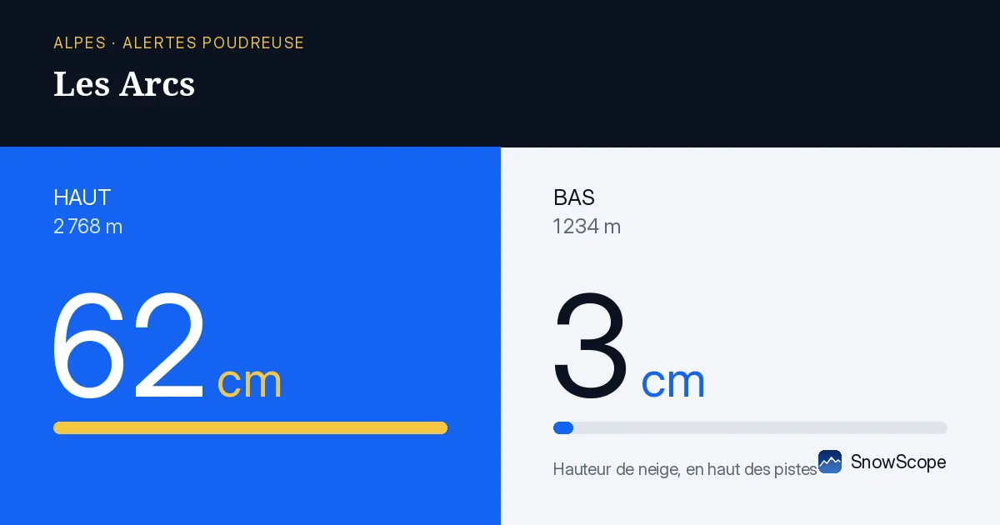
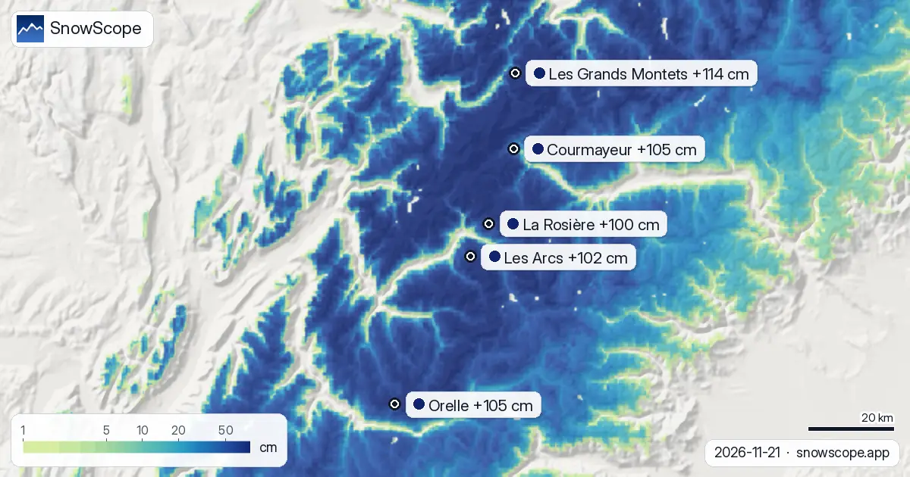

Les Arcs : 102 cm de neige fraîche en 72 heures (Alpes, 21 novembre)
Les Arcs ont accumulé 102 cm de neige fraîche en trois jours, portant les hauts versants à 80 cm. La meilleure neige est concentrée en altitude : à 3 205 m vous avez une bonne épaisseur, mais plus bas la couverture s'amenuise rapidement—un coup de sonde avant de skier est essentiel maintenant.
Consultez les prévisions neige en temps réel pour Les Arcs sur l'application SnowScopeHauteurs de neige, alertes poudreuse et carte 3D, gratuitement.
Trois jours de neige régulière sur toute la chaîne
Une dépression avec neige abondante a traversé les Alpes du mercredi au vendredi. Les Arcs, Courmayeur et Les Grands Montets ont tous enregistré entre 100 et 114 cm en 72 heures. La neige est tombée par vagues : Les Arcs ont reçu 41 cm le 19 novembre, 50 cm le 20 novembre, et 11 cm hier.
La tempête a laissé 87 520 km² de terrain enneigé dans les Alpes aujourd'hui. La neige atteint maintenant 971 des 1 204 stations de la chaîne—une augmentation par rapport à 929 stations il y a deux jours.
| Station | Hauteur de neige | Neige fraîche, 72 h | Attendu, jours suivants | Sommet |
|---|---|---|---|---|
| Les Grands Montets | 74 cm | 114 cm | 80 cm | 2 768 m |
| Courmayeur | 67 cm | 105 cm | 76 cm | 2 749 m |
| Orelle | 136 cm | 105 cm | 88 cm | 3 221 m |
| Les Arcs | 80 cm | 102 cm | 74 cm | 3 205 m |
| La Rosière | 77 cm | 100 cm | 71 cm | 2 799 m |

Comment cela se compare avec les novembres précédents
Les Arcs sont en bonne position pour novembre. Les hauts versants à 3 205 m affichent 80 cm—une base solide pour la mi-saison. À moyenne altitude (environ 2 779 m), SnowScope montre 61 cm, ce qui est plus fin que les 64 cm habituels pour cette date mais compte comme au-dessus de la moyenne comparé aux hivers passés.
La neige de début novembre vaut la peine d'être là. La plupart des années, cette épaisseur n'arrive qu'au début décembre sur les pistes intermédiaires et basses.
L'altitude fait toute la différence aujourd'hui
Les hauts versants des Arcs portent 80 cm. Descendez au niveau de la vallée (1 222 m) et vous trouvez seulement 10–15 cm. Ce gradient est typique après une tempête : les hauts pics reçoivent le plus de neige, tandis que les versants bas attendent encore plus.
Dimanche 22 novembre apporte 53 cm supplémentaires, la majorité tombant au-dessus de 2 500 m. Lundi 23 novembre, le système s'affaiblit et n'ajoute que 20 cm. La tendance bascule ensuite : le 24 novembre montre peu de neige fraîche (environ 1 cm) car la dépression s'éloigne.
Limite de pluie et comment organiser votre journée
Le niveau de congélation aux Arcs aujourd'hui se situe entre 2 360 et 2 600 m, donc la neige tombe sur tous les versants. Dimanche il monte à 2 500–2 780 m—toujours en dessous du sommet (3 205 m)—gardant les hauts versants secs. Lundi la limite de congélation descend à 2 100–2 780 m ; attendez-vous à des conditions mixtes sur les pistes intermédiaires.
Le 24 novembre, la limite de congélation remonte à nouveau à 2 130–2 350 m. Planifiez vos journées hors-pistes pour dimanche et lundi quand la ligne de congélation est plus basse et la neige risque d'être plus sèche et stable.
Ce que les stations au sol nous disent
Les mesures en temps réel soutiennent le tableau. La station Hohe Munde Gipfel (2 580 m) a enregistré 62 cm le 20 novembre avec 40 cm ajoutés en 24 heures. La station Daone à plus basse altitude (1 785 m) affichait 45 cm, également avec 40 cm de neige fraîche ce jour-là. Ces lectures ponctuelles confirment que les fortes chutes ont atteint les hautes et moyennes altitudes.
Les mesures de terrain réel confirment ce que la carte de neige montre. Parce que chaque station est un endroit spécifique à une date spécifique, comparez-les avec votre versant et exposition choisis quand vous planifiez votre descente.
Risque d'avalanche et prochaines étapes
Le danger d'avalanche dans la région est au niveau 3 sur l'échelle à 5 niveaux. La neige fraîche sur les versants raides et les couloirs chargés par le vent demandent de la prudence. Consultez le bulletin BERA de Météo-France avant de vous aventurer hors-piste ou en arrière-pays.
Plus de poudreuse est prévue pendant le week-end. L'appli SnowScope vous alerte quand la neige fraîche atteint vos stations choisies, pour vous permettre de programmer votre sortie et la skier fraîche.
Conseils aux skieurs
- Skiez au-dessus de 2 500 m ce week-end pour la meilleure qualité de neige et le risque de pluie le plus faible ; les versants bas sont plus fins et peuvent tourner en slush en fin d'après-midi.
- Dimanche 22 novembre est le jour de neige le plus chargé à venir avec 53 cm attendus aux Arcs. Planifiez votre sortie hors-piste pour ce jour-là si les conditions le permettent.
- Le vent a travaillé la neige fraîche en congères sur les versants sous le vent et les crêtes. Utilisez une sonde ou une pelle pour sentir ce qui se cache sous la surface avant de vous engager sur un terrain raide.
- Lisez le bulletin BERA d'avalanche officiel de Météo-France avant de skier hors-piste ou de faire du ski de randonnée ; la neige fraîche sur un versant de mi-saison demande du respect.
- Vérifiez le site des Arcs pour le statut des remontées et les dates d'ouverture avant de voyager—la neige sur la carte ne confirme pas que la station fonctionne.
À propos de ces chiffres
Les hauteurs de neige des stations sont la neige la plus épaisse sur le haut du domaine à la date indiquée ; ce sont des estimations pour une zone, pas une mesure en un point. Les prévisions peuvent changer. Consultez toujours le bulletin d'avalanche officiel avant le hors-piste.
Bulletins d'avalanche officiels: Météo-France BERA · AINEVA
Citer ce bulletin
Pour la recherche, l'enseignement ou la presse : chiffres et graphiques réutilisables librement sous CC BY 4.0 avec cette citation.
SnowScope (2026), Les Arcs : 102 cm de neige fraîche en 72 heures (Alpes, 21 novembre), https://snowscope.app/blog/fr/2026/11/alps-les-arcs-fresh-snow-powder-alert-21-november-2026.html, consulté le 2026-11-21
SnowScope (Atlas Labs). (2026, November 21). Les Arcs : 102 cm de neige fraîche en 72 heures (Alpes, 21 novembre). SnowScope snow reports. https://snowscope.app/blog/fr/2026/11/alps-les-arcs-fresh-snow-powder-alert-21-november-2026.html
BibTeX
@misc{snowscope2026alpslesarcsfreshsnowpowd,
author = {{SnowScope (Atlas Labs)}},
title = {Les Arcs : 102 cm de neige fraîche en 72 heures (Alpes, 21 novembre)},
year = {2026},
month = nov,
howpublished = {\url{https://snowscope.app/blog/fr/2026/11/alps-les-arcs-fresh-snow-powder-alert-21-november-2026.html}},
note = {Published 2026-11-21 11:02 UTC; accessed 2026-11-21}
}· CC BY 4.0 · Méthodes, données et outils →
Les Arcs : neige et température selon l'altitude, cet hiver vs l'hiver dernier (outils) →
Suivre Les Arcs
Gratuit : un message quand la neige arrive, et la météo chaque matin.